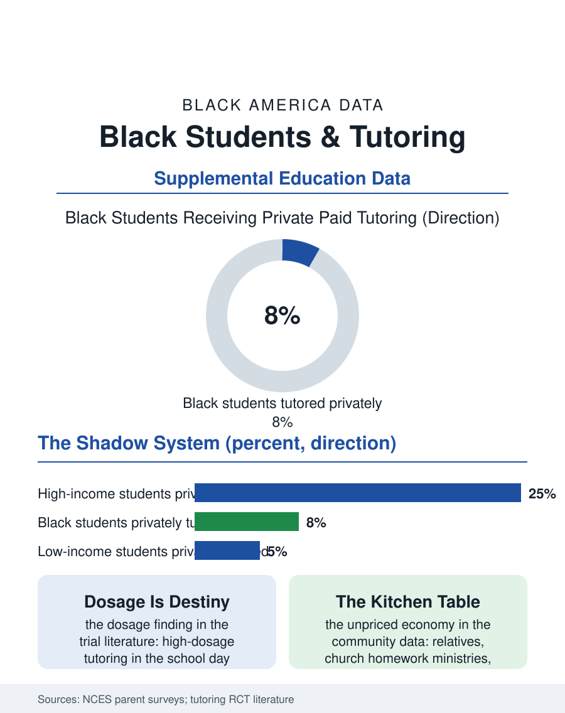

Black Education
The Shadow System: Black Students and Tutoring
Private tutoring converts income into advantage at rates Black families access least, while public high-dosage tutoring became the era's best-proven remedy. The tutoring file.

Private tutoring is the shadow education system: the paid hours after school that convert family income directly into academic advantage. The industry's global surveys size the market in the billions in the United States alone, and its American demographics are the wealth file translated into homework: Black students receive private tutoring at roughly half the rate of white students and a fraction of the rate of Asian American students, while the public version, school-funded tutoring, has become the policy era's chosen remedy. This article reads the tutoring file.
The Private Market's Sorting
The federal education surveys that ask parents about paid tutoring return a consistent hierarchy: test-prep and subject tutoring concentrate among high-income families, with participation climbing steeply by income and parental education. The racial pattern sits inside the income pattern but does not vanish within it, reflecting the industry geography, tutoring centers cluster where the paying customers are, the referral knowledge that travels through parent networks, and the price points, thirty to eighty dollars an hour for the storefront tier, multiples of that for the private tier, that ration the product by design. The product itself differs by tier in ways the market understands: affluent tutoring is enrichment and insurance, staying ahead and test strategy, while the tutoring Black families purchase at the highest relative sacrifice is remedial, catching a child the school file failed earlier, bought later in the child's difficulty and at greater family strain. The online platforms restructured the market's bottom in the last decade, driving hourly prices down and hours up, with quality variance the consumer data are only beginning to price, and the pandemic's remote schooling interlude normalized the screen-delivered session for a generation of parents who had never considered the category.
The Public Tutoring Experiment
The policy counterweight is the largest tutoring experiment in American history: the pandemic relief years funded district tutoring at scale, and the research field used the moment to test what the small trials had promised, that high-dosage tutoring, small groups, multiple sessions weekly, during the school day, produces achievement gains among the largest ever measured for a school intervention, on the order of months of additional learning, with the strongest effects in early reading and middle-school math. The delivery details decide everything in the evaluation literature: dosage in the school day beats the after-school version because attendance is the intervention's active ingredient, and after-school programs, voluntary and transportation-bound, enroll Black students at lower rates and keep them at lower rates still, reproducing the access pattern of every voluntary program in this atlas. District programs that learned the lesson, scheduling tutoring into the master schedule, staffing with trained tutors rather than volunteers, and targeting by assessment rather than application, report both the gains and the equity the model promised, since a universal in-school program has no application to fail and no bus to miss. The funding cliff at the relief's expiry is the file's live chapter: districts are deciding which programs survive on operating budgets, and the survival pattern will be read in the next survey cycle as the natural experiment's second half.
The Family's Own Ledger
Beneath both markets sits the tutoring Black families administer themselves, unpriced by any survey of the industry: the relative who teaches the math at the kitchen table, the church's homework ministry, the fraternity and sorority tutoring corps in the community centers, the retired teacher whose living room runs a dozen students a week at prices set by conscience. The time-use and community data catch fragments of this economy, enough to know it is large, and it functions as the private market's moral competitor, allocated by kinship and obligation rather than income. Its limits are arithmetic: the aunt who can tutor algebra cannot tutor calculus, and the family's network tops out at the network's own attainment, which is the first-generation problem stated in tutoring form. The tutoring file closes on the intervention's unusual clarity. Of every remedy in the education pages of this atlas, tutoring has the strongest experimental evidence, the clearest delivery specification, and the most direct relationship between funding and effect. The private market will keep selling it to the families who need it least urgently. The public question, now being answered district by district as the relief money ends, is whether the proven public version was a pandemic improvisation or a permanent floor, a decision whose results will be legible within a few years in the achievement data of Black students, one way or the other, in one of the few files in this atlas where the outcome can be attributed to a single choice.
More in Black Education
Black Educational Attainment: High School Parity, the College Gap
About 89 percent of Black adults hold a high school diploma and one in four holds a bachelor's degree or higher — the attainment ladder, the college completion gap, and the generational trend.
Historically Black Colleges and Universities: Enrollment and Degrees
More than 100 HBCUs enroll roughly 290,000 students and award about one in six Black bachelor's degrees — an outsized share from a small sector. The federal education data.
Black College Enrollment: 2.4 Million Students
About 2.4 million Black students are enrolled in American colleges — nearly two-thirds of them women. The NCES enrollment data by sector, level, and trend.
Source: National Center for Education Statistics parent and family involvement surveys; randomized evaluations of high-dosage tutoring; education market analyses.